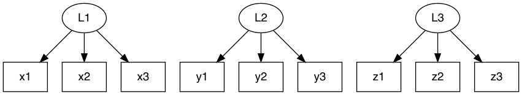
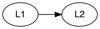
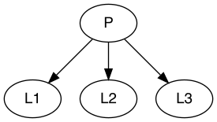
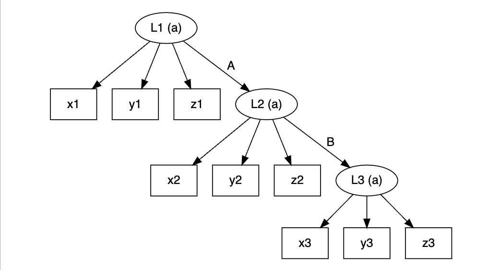
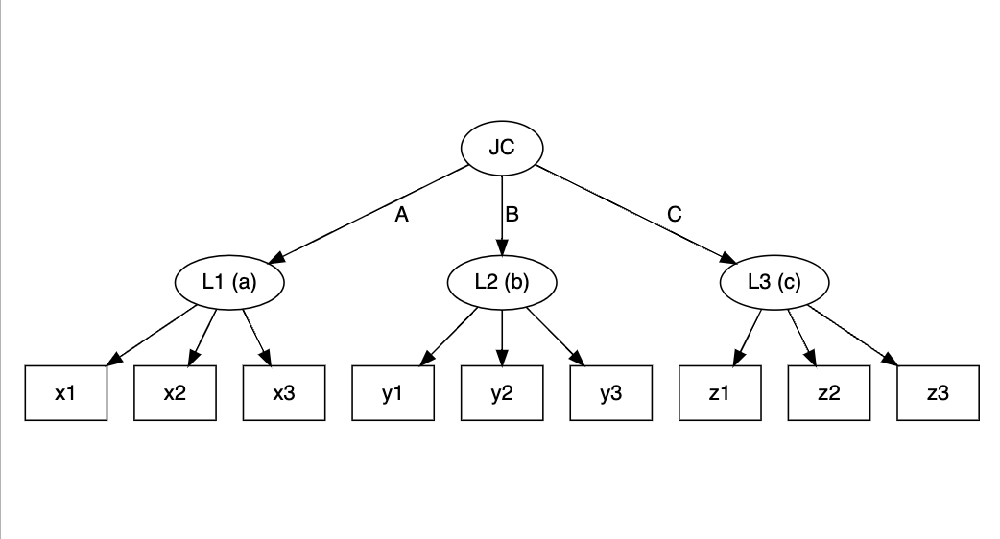
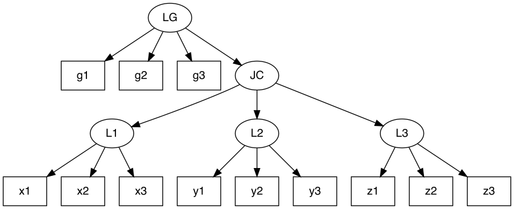

slca provides comprehensive tools for the implementation of Structural Latent Class Models (SLCM), including Latent Transition Analysis (LTA; Linda M. Collins and Stephanie T. Lanza, 2009) doi:10.1002/9780470567333, Latent Class Profile Analysis (LCPA; Hwan Chung et al., 2010) doi:10.1111/j.1467-985x.2010.00674.x, and Joint Latent Class Analysis (JLCA; Saebom Jeon et al., 2017) doi:10.1080/10705511.2017.1340844, and any other extended models involving multiple latent class variables.
Installation
You can install the released version of slca from CRAN with:
install.packages("slca")And the development version from GitHub with:
# install.packages("devtools")
devtools::install_github("kim0sun/slca")Syntax
The function serves as the starting point for model specification.
slca(x, ..., constraints = NULL)This primary function is crucial for forming the foundational structure of your analysis, enabling a deep understanding of the intricate latent structures within your dataset. The syntax is organized into two main segments: the measurement model specification and the structural model specification. This logical arrangement enhances the clarity and efficacy of the model development process.
Measurement model specification
Here, you delve into the heart of your model by defining latent class variables. These are essentially unobserved variables inferred from manifest indicators (observable variables). Each latent class variable is represented alongside its number of classes, denoted in either parentheses or brackets. For instance, you might define three classes for latent class variable L1 as L1(3). Following syntax describes three latent class variables with three classes each measured by x, y, z.
L1(3) ~ x1 + x2 + x3
L2[3] ~ y1 + y2 + y3
L3(3) ~ z1 + z2 + z3
Structural model specification
This part focuses on establishing relationships between different latent class variables. For example, L1 ~ L2 indicates a relationship where L1 have impact on or related to L2, as shown below:
L1 ~ L2
In some cases, you might need to define higher-level latent class variables that are influenced by or comprise several other latent class variables. For example, a higher-level variable P could be a composite of L1, L2, and L3. Here, note that you should define the number of latent classes for P. This relationship can be represented as follows:
P[4] ~ L1 + L2 + L3
Parameter constraints
A critical aspect of model specification is ensuring measurement invariance. This concept refers to the idea that the same latent construct is being measured across different groups or time points. In slca, you can assume measurement invariance by setting constraints on your latent class variables. The constraints argument is used to specify which latent class variables should be measured in a homogeneous manner. This feature is crucial for comparative studies where you need to ensure that the measurement properties of your constructs are consistent across different sub-groups or over time.
slca(L1[3] ~ x11 + x21 + x31,
L2[3] ~ x12 + x22 + x32,
L3[3] ~ x13 + x23 + x33,
P[3] ~ L1 + L2 + L3,
constraints = c("L1", "L2", "L3"))If the model needs to be constrained for the transition probabilities to be homogeneous, you can use ~ or -> to represent the relationships you want to indicate, as follows:
Model Examples
library(slca)
lta <- slca(L1[3] ~ x1 + y1 + z1, L2[3] ~ x2 + y2 + z2, L3[3] ~ x3 + y3 + z3,
L1 ~ L2, L2 ~ L3, constraints = c("L1", "L2", "L3"))
plot(lta)
jlca <- slca(L1[3] ~ x1 + x2 + x3, L2[3] ~ y1 + y2 + y3, L3[3] ~ z1 + z2 + z3,
JC[3] ~ L1 + L2 + L3)
plot(jlca)
lcamg <- slca(L1[3] ~ x1 + x2 + x3, L2[3] ~ y1 + y2 + y3, L3[3] ~ z1 + z2 + z3,
JC[3] ~ L1 + L2 + L3, LG[3] ~ g1 + g2 + g3,
LG ~ JC)
plot(lcamg)